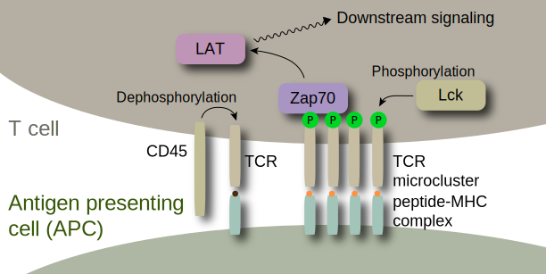

Early T cell signaling
The T cell recognizes antigen, and it plays a central role in adaptive immune system. It has high selectivity and sensitivity to foreign peptides that are presented by an antigen presenting cell (APC). TCR can distinguish peptide sequences of difference of even a single residue, which leads to dramatic difference of final outcome of T cell response. This sophisticated machinery inspires us to study the mechanism behind T cell signaling.
TCR microclusters
TCR forms a microcluster when it is engaged by antigen. The TCR microcluster is considered as a primary scaffold to give the T cell high recognition capability for antigen. One plausible mechanism is "size segregation model", in which TCR is phosphorylated by excluding phosphatases from the microcluster.
Supported lipid bilayer (SLB)
A planar bilayer of phospholipid molecules can be formed on a glass coverslip by depositing small unilamellar vesicles of the lipids. This is called a supported lipid bilayer (SLB). Lipid molecules in the SLB can freely diffuse in two dimensions. You can functionalize a SLB with multiple proteins in a selective and controlled manner through various linkages such as poly-His chelation, maleimide/thiol, and DNA hybridization, etc. This works as a surrogate cell membrane for studying juxtacrine signaling of cells. You can use TIRF microscopy to achive high sensitivity down to a single molecule of fluorophore.
Review papers for understanding the field
- Kaushik Choudhuri, Michael L Dustin; "Signaling microdomains in T cells." FEBS Lett., 584, 4823-31 (2010).
- P Anton van der Merwe, Omer Dushek; "Mechanisms for T cell receptor triggering." Nat. Rev. Immunol., 11, 47-55 (2010).
- David R Fooksman, et al.; "Functional anatomy of T cell activation and synapse formation." Annu. Rev. Immunol., 28, 79-105 (2010).